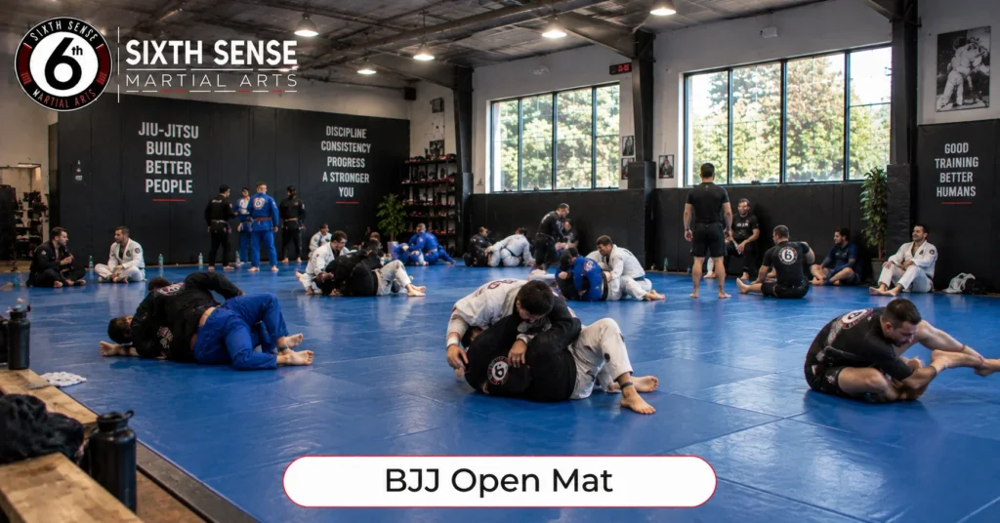
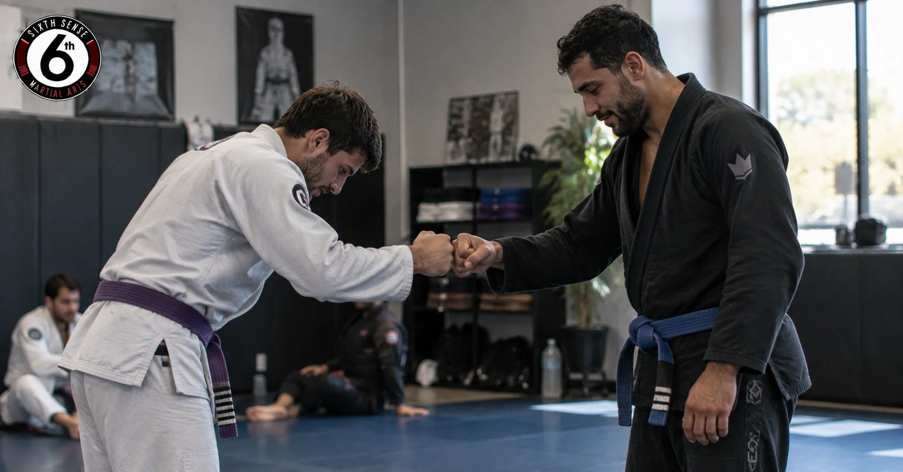
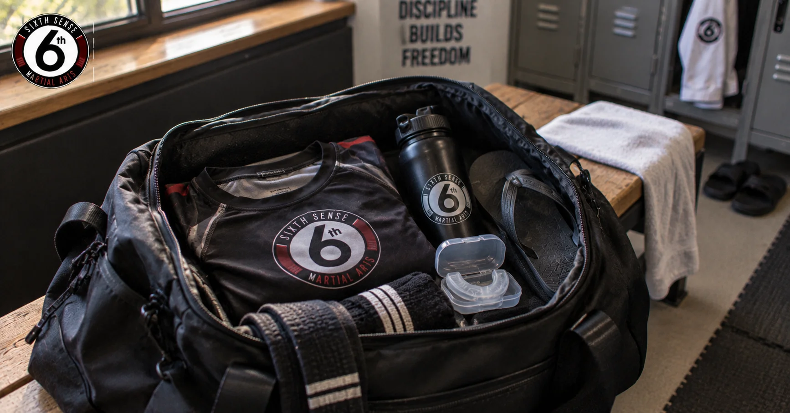

BJJ Open Mat What It Is and Why You Should Join One

The Session Most Students Skip and Regret
There is one session on the weekly schedule that new students almost always overlook and it happens to be one of the most valuable. A BJJ open mat sits quietly on the calendar between regular classes often with no instructor leading it and no set curriculum to follow. Yet the students who show up consistently tend to progress noticeably faster than those who only attend structured classes. At Sixth Sense Martial Arts in Coppell TX we have watched this pattern repeat itself over and over. So if you have seen open mat listed on the schedule and wondered whether it is worth your time this guide will explain exactly what it is how it works and why skipping it might be holding your training back.
What a BJJ Open Mat Actually Is
Think of a BJJ open mat like a pickup basketball game instead of an organized practice. There is no instructor standing in front of the room teaching a technique and there is no fixed curriculum everyone follows together. Instead students of every rank show up find a partner and train however they choose. Some people focus entirely on free rolling while others spend the whole session drilling one specific position they have been struggling with. As a result the open mat becomes a completely self directed environment where you decide what you need to work on. Moreover this format can include gi training no gi training or even a mix of both depending on what your gym allows and who shows up that day.
How a Typical Open Mat Session Unfolds
Walking into your first open mat can feel a little different from a regular class and knowing what to expect helps. Usually there is no formal warm up the way there would be in a structured class. Instead students trickle in over the course of the session stretch on their own and start looking for training partners. Subsequently once you find someone to work with you simply nod point to an open spot on the mat and begin. Some pairs will do rounds with a timer running five or six minutes with a short rest between while others just roll until they naturally decide to stop and switch partners. Furthermore the atmosphere tends to be noticeably more relaxed than regular class with people chatting between rounds and catching up like old friends.
Why Every Belt Level Benefits from Open Mat
A common misconception is that BJJ open mat sessions are only useful for advanced students. In reality every belt level gains something different from attending. White belts get valuable extra reps on techniques they just learned in class along with exposure to a wider variety of training partners than they would normally see. Meanwhile more experienced students use the time to troubleshoot specific weaknesses in their game or experiment with entirely new techniques without the pressure of a structured curriculum. As a result the open mat becomes a place where growth happens at every stage of your journey. Moreover newer students often get the added benefit of picking up small details simply by watching higher belts roll nearby.
The Freedom That Makes Open Mat So Valuable
Regular BJJ classes follow a structured lesson plan where everyone works on the same technique at the same pace. While this systematic approach is essential for learning fundamentals it does not leave much room for individual exploration. However open mat flips that entirely by giving you complete freedom over how you spend your time. As a result you can spend an entire session drilling guard passes if that is your weak spot or you can jump straight into live rolling with five different partners in a row. Furthermore this freedom allows you to pressure test what you learned in class against a resisting opponent which is exactly how techniques actually become useful under real conditions. Consequently open mat becomes the bridge between knowing a technique and actually being able to use it.
Building Community Through BJJ Open Mat
One of the most underrated benefits of attending open mat has nothing to do with technique at all. It is the community that forms around these sessions. Because there is no rigid class structure people naturally chat between rounds share tips and build genuine friendships. As a result many students describe open mat as the moment when their gym started feeling like a second family rather than just a place they go to train. Moreover training with people outside your usual class time exposes you to teammates you might rarely interact with otherwise. In addition many academies welcome visitors from other gyms during open mat which broadens your network even further within the wider BJJ community.
How Open Mat Helps You Pressure Test Your Game
Learning a technique in class is only the first step. The real test comes when you try to apply it against someone who is actively resisting and that is exactly what BJJ open mat provides. During regular classes your partner is often cooperating to help you learn the mechanics of a new move. However during open mat rolling your training partner is trying just as hard to stop you which reveals whether you truly understand the technique or just memorized the steps. As a result this pressure testing exposes gaps in your game that structured classes simply cannot replicate. Furthermore this process of trial error and adjustment is where real technical understanding develops over time rather than through repetition alone.
Etiquette Every Student Should Know Before Attending
Even though open mat feels informal there are still unwritten rules that keep the environment safe and respectful for everyone. Before rolling with someone new it is common courtesy to ask about any injuries so you can train around them safely. Moreover matching your intensity to your partner’s skill level and goals for the session matters a great deal. If a lower belt wants to work on technique slowly rolling at full intensity against them defeats the purpose and can even discourage them from coming back. Furthermore tapping early and often when caught in a submission is expected and encouraged rather than seen as a weakness. Respecting your academy’s specific rules and asking staff if you are ever unsure is always the right move.

Why White Belts Should Never Skip Open Mat
It is completely normal for white belts to feel intimidated walking into their first BJJ open mat especially surrounded by more experienced students. However this hesitation often costs beginners valuable growth opportunities. White belts who attend regularly get significantly more mat time which directly translates into faster progress. Moreover experienced students are usually more than willing to slow down and offer pointers to newer teammates during these relaxed sessions almost like a mini private lesson. As a result showing up consistently as a beginner accelerates your learning curve dramatically compared to relying on regular classes alone. In addition finding a fellow white belt to attend with can make that first session feel far less intimidating and much more approachable.
Positional Rolling A Powerful Open Mat Tool
Not all rolling during open mat has to be a full intensity match from a standing position. Many students use a technique called positional rolling to sharpen a specific part of their game. This involves starting from a predetermined position such as closed guard or side control and working specifically from there rather than starting the round from scratch. As a result this focused approach allows you to repeatedly practice escaping a bad position or finishing from a dominant one without wasting time on unrelated exchanges. Furthermore many pairs use a catch and release method where a submission is acknowledged rather than fully applied which keeps the drilling safe while still reinforcing the skill. This structured freedom within an otherwise unstructured session is what makes positional rolling so effective.
How Open Mat Complements Your Regular Training
Some students wonder whether open mat is truly necessary if they are already attending regular classes consistently. However the two formats serve completely different purposes and work best together. Regular classes teach you new techniques in a structured methodical way while BJJ open mat gives you the unstructured time needed to actually integrate and test those techniques. Moreover the extra mat time you get from attending open mat compounds over weeks and months leading to noticeably faster overall progress. In addition training outside the confines of a set curriculum helps you develop your own unique style and preferences rather than just following what everyone else in class is doing. Consequently students who combine both formats consistently tend to develop a more well rounded and instinctive game.
What to Bring and How to Prepare for Your First Open Mat
Preparing for your first open mat is simple but a little planning goes a long way. Bring a clean gi if your gym allows gi training or a rash guard and shorts if the session includes no gi rolling. Moreover staying hydrated beforehand and bringing a water bottle helps you get the most out of an extended training session. In addition arriving with realistic expectations rather than pressure to perform will help you enjoy the experience far more. Furthermore checking your gym’s schedule in advance ensures you know exactly when the session starts and whether any specific rules apply that day. Showing up with an open mind and a willingness to learn is truly the only requirement.

Join a BJJ Open Mat Session at Sixth Sense
If everything you just read has convinced you it is time to give open mat a try Sixth Sense Martial Arts in Coppell TX offers regular sessions for students of every rank and background. Whether you are a nervous white belt or an experienced practitioner looking to sharpen a specific skill there is a place for you on the mat. Head coach Matheus and the experienced coaching staff create a welcoming environment where questions are encouraged and beginners never feel out of place. Moreover the gym is located at 817 S MacArthur Blvd making it easily accessible for members throughout the Coppell and DFW area. There has never been a better time to add this valuable training tool to your weekly routine.
Conclusion
BJJ open mat is far more than an empty slot on the schedule. It is where techniques learned in class get pressure tested real friendships are built and your own personal style begins to take shape. Whether you are a brand new white belt looking for extra reps or an experienced student refining a specific weakness open mat offers something valuable for everyone willing to show up. At Sixth Sense Martial Arts in Coppell TX this unstructured training time complements everything you learn in regular classes and accelerates your overall progress. So the next time you see open mat on the schedule do not skip it. Step onto the mat find a partner and start training.
Contact Us
Have questions about our classes or training programs. We would love to hear from you. Reach out to us today and let us help you start your martial arts journey the right way.
Follow Us on Social Media
Stay connected with the Sixth Sense Martial Arts community. Follow us for training tips belt grading updates student highlights and exclusive offers.
FAQ’s
No open mat welcomes students of every rank from white belt to black belt. Many gyms actually encourage lower belts to attend since it provides valuable extra mat time and exposure to different training partners.
No regular classes follow a structured curriculum with a set technique taught by an instructor. Open mat has no formal lesson plan and instead allows students to freely roll drill or work on whatever they choose.
Simply approach someone make eye contact and ask if they would like to roll or drill together. Most BJJ communities are welcoming and experienced students are usually happy to help newer members feel comfortable.
Yes open mat is entirely self directed which means you can spend the whole session drilling specific techniques without any pressure to roll. Many students use this time specifically to work on positions they find challenging.
Attending as often as your schedule allows is generally recommended for beginners since extra mat time accelerates learning significantly. Even one additional session per week beyond your regular classes can make a noticeable difference over time.
Most gyms allow both gi and no gi training during open mat depending on gym policy and what training partners are available. Check with your specific academy to see what format is offered during their sessions.
Train with us in Coppell
The first class is free. Shorts, a t-shirt and a water bottle. We lend the rest.
Book a free class